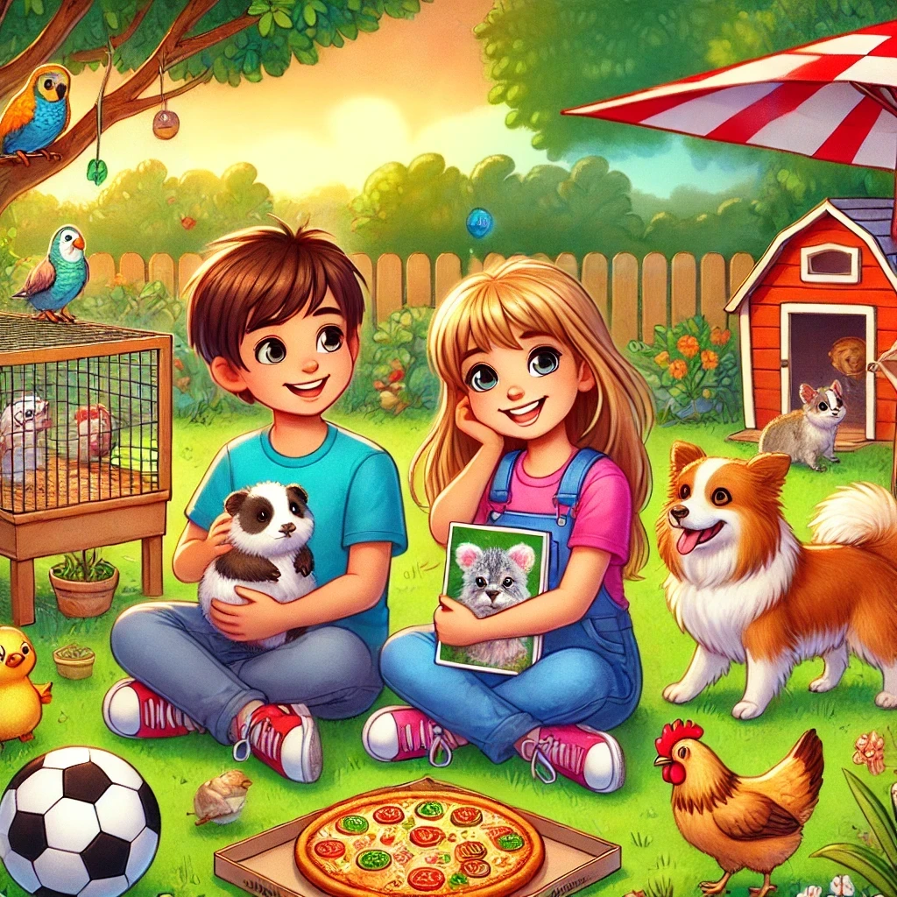

Entrevue avec Rosalie

Rosalie nous parle de ses jeux de société préférés, de son amour pour les animaux, et de ses rêves de voyage à Toronto et Disney World. Elle partage aussi ses souvenirs d'école, son quartier, et ce qui la rend vraiment heureuse, comme revoir sa famille.
Entrevue avec Ariane
Ariane nous parle de sa passion pour les animaux et son rêve de devenir vétérinaire, ainsi que de son amour pour le poulet au citron et le patinage. Elle partage aussi ses moments heureux en famille, ses souvenirs d'anniversaire avec un gâteau à la vanille et son plaisir de jouer à Pet Shop.
Entrevue avec Laurent
Laurent, 9 ans, aime le hockey, les projets à l'école et jouer avec son ami Charles-Antoine. Il adore sa famille, ses chats Cupcake et Octavia, et son plat préféré est le pâté chinois.
Entrevue avec Mia
Mia a 9 ans, elle aime les maths, le basket et le film Sonic parce qu'elle le trouve drôle. Elle adore passer du temps avec ses amis et sa famille, jouer dehors en hiver, et manger de la crème glacée à la vanille.
Entrevue avec Justine
Justine adore les animaux, a déjà eu un chien, des poules et un hamster, et rêve d'avoir un cochon d'Inde. Elle aime aussi les maths, le soccer, la pizza moelleuse et rêve de voir des koalas en Australie.